Only some of the paths in the semistructure are valid. Intuitively a path is valid if it transits through properties that share some ``commonality.'' This commonality is computed by collapsing the labels on the path.
Consider the case of a path to a movie star's name. One such path is shown in Figure 3, composed by the solid lines. Intuitively, the path forms a virtual edge from &movies to Bruce Willis. In the figure, the virtual edge is depicted as a dashed line. The virtual edge should have a label that describes it, just like any other edge. This label is determined by collapsing the labels along the path into a single label.
The operation described below collapses a path by recursively collapsing the labels along the path. A pair of labels is collapsed by determining their common properties. If only one of the labels has some property, that property is propagated to the collapsed label. A missing property in a label is interpreted as ``don't care information,'' meaning that any value of the missing property is acceptable for the label. For properties that appear in both labels, a property-specific collapsing constructor is used to compute the value of the property. This constructor could result in an undefined value, which signifies that these labels do not have any commonality for that property. The path is collapsed backwards, that is, from the sink to the source, which effectively means that each collapsing constructor is left-associative.
[
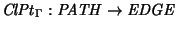
]Collapse path (
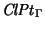
) takes a path and computes the label for the virtual edge between the first and last nodes in the path. The operation is extensible in that it depends on the semantics of the properties as given by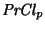
in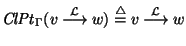
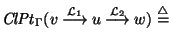
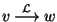
where
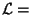
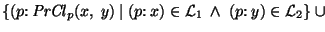
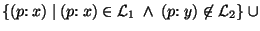
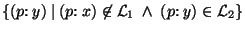
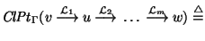
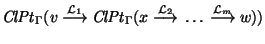
`2
The collapsing constructor, , depends on the semantics of the property. Table 1 suggests constructors for a few common properties. In general, since each property is collapsed independently, the collapse constructor for a property should either be a mutator, which transforms one domain value into another, e.g., concatenation, or a restrictor, which reduces the extent of the domain value, e.g., time interval intersection.
transaction time property in the collapsed path in
Figure 3 is [31/Jul/1998 - uc].
This is the intersection of the transaction times on the edges on the path.
It follows that
the value Bruce Willis was described in the database as a
movie.stars.name from 31/Jul/1998 to the current time
(until it is changed).
Note that this is not an exclusive description--a different
movie.stars.name path (through &Color of Night)
is current over a slightly longer transaction-time interval.
 2
2
To determine if a path is valid, the path is collapsed and then each property is checked to ensure that it is defined.
[
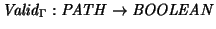
]A path, P, is valid if after collapsing the path, there are no properties with undefined values.
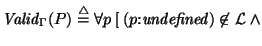
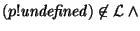
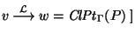
`
Consider the path from &movies through &Star Wars IV
to the misspelled value Bruce Wilis in
Figure 2. When the path is collapsed, the name property in the resulting label has the value movie.stars.name. The transaction time property is
undefined. The transaction times of the first and last edges in the
path are disjoint, so their intersection does not produce a valid
transaction time value. Consequently the path is invalid.
 2
2
The cost of checking path validity is
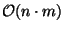
, where nis the length of the path and m is the number of properties in a label. We expect that m will usually be much smaller than n. Path validity can be checked as a path is matched, as discussed next.